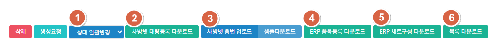

ERP 목록 하단의 버튼으로 상태를 한꺼번에 바꾸고, 사방넷·ERP에 올릴 파일을 내려받습니다. 승인 관련 버튼은 일부 승인 권한자에게만 보입니다.

| ① 상태 일괄변경 | 목록에서 체크한 항목의 상태값을 한꺼번에 바꿉니다. 단, 이미 생성된 건은 생성요청·생성중 상태로 되돌릴 수 없습니다. |
|---|---|
| ② 사방넷 대량등록 다운로드 | 목록을 검색한 뒤 누르면 검색 결과 전체를 사방넷 대량등록 양식으로 내려받습니다. |
| ③ 사방넷 품번 업로드 / 샘플다운 | [샘플다운] 파일에 정보를 입력해 업로드하면 해당 ERP번호의 사방넷 품번이 업데이트됩니다. |
| ④ ERP 품목등록 다운로드 | 목록을 검색한 뒤 누르면 검색 결과 전체를 ERP 품목등록 양식으로 내려받습니다. |
| ⑤ ERP 세트구성 다운로드 | 검색 결과 중 묶음상품에 한해 세트구성 양식으로 내려받습니다. |
| ⑥ 목록 다운로드 | 검색 결과를 엑셀로 내려받습니다. |